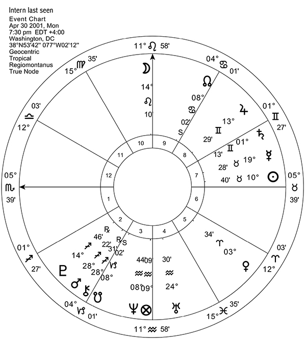

A YOUNG WOMAN GOES MISSING
Let’s look at a chart of a missing person to see how Lilly’s rules apply. The disappearance of a young woman in May of 2001 caused a scandal in Washington, DC. The woman who went missing was an intern for a government agency. Her parents reported her missing on May 6 because they had been unable to reach her. A police investigation revealed that she was last seen alive at 7:30 p.m. on 30 April 2001 at a health club in the Dupont Circle of Washington, DC, near her apartment.
Going to her apartment, the police found that her computer had been used during the morning of May 1, and that whoever used it (presumably the young woman) logged off at 1:00 p.m. The last email she allegedly sent was posted at 10:45 a.m. on May 1. A year later, on Wednesday, May 22, 2002, a man walking his dog in Washington’s Rock Creek Park discovered skeletal remains, which dental records confirmed belonged to the missing woman.
Although there is evidence that she may have used her computer on May 1, my practice in missing person cases is to study the chart for the time and place the person was last seen alive. Here is the “last seen” chart for this young woman, for 30 April 2001 at 7:30 p.m. EDT in Washington, DC, with Regiomontanus houses (Chart 31).
According to Lilly:
If a question be demanded of one absent in a general way, and the querent hath no relation to the party, then the 1st house, the Lord of that house and the Moon shall signify the absent party. (CA 151)
In this chart, Scorpio rises, making Mars the Ascendant ruler. Thus, Ascendant-ruler Mars and the Moon represent the missing woman. It is noteworthy that the Ascendant of this chart lies in the via combusta (15o Libra–15o Scorpio), a region associated with obscurity, secrecy, misfortune, and deprivation of light.
Chart 31: Intern Last Seen (Event Chart)
30 April 2001, 7:30 p.m. EDT, Washington, DC. Moon day, Sun hour.
Regiomontanus houses. Dwad of Ascendant is at 7o 36' Capricorn.
Lilly says that if the absent person is dead, “the Lord of the 8th House or Planet posited in the [8th] House or within five degrees of the Cusp of the 8th House” (CA 151) would be signifiers of the death and its quality. In this chart, the Gemini 8th house is ruled by Mercury, Jupiter occupies the 8th house, and Saturn conjoins the 8th house cusp. Thus, Mercury, Saturn, and Jupiter would also give information about death.
Lilly goes on to comment about determining life and death in an absent person chart:
See first whether the Lord of the Ascendant, the Moon and the Lord of the 8th House or Planet in the 8th house be corporally joined together; or that the Moon, Lord of the Ascendant and Lord of the 8th are in opposition either in the 8th or 2nd, or [in the] 12th and 6th, for these are arguments the party is deceased, or sick, or very near death. (CA 151)
See also if there be any translation of the light of the Lord of the Ascendant unto the Lord of the 8th, especially in degrees deep, lame or deficient; or on the contrary, that there be any translation or carrying the virtue or influence of the Lord of the 8th unto the Lord of the Ascendant; or if the Lord of the 8th be posited in the Ascendant, or if the Lord of the Ascendant and the Moon be placed in the 4th House, these are testimonies the party absent is dead. (CA 151)
I have ever found that if the Lord of the Ascendant be in the 9th, 10th or 11th (though many reports went the absent was dead) yet I found him to live. (CA 151)
Several troubling factors stand out in this “last seen” chart. The Moon, which co-rules the missing person, applies to square Mercury, ruler of the 8th house of death. The Ascendant-ruler Mars (the querent) does not lie in the 9th, 10th, or 11th house (which would suggest that she is probably alive), but Mars in the 2nd (a house traditionally associated with death, much like the 8th) mutually applies to conjoin Chiron, which symbolizes a wound that will not heal. Jupiter in the 8th house mutually applies to oppose Pluto in the 2nd house, suggesting the possibility of the use of force and coercion. Regarding the 2nd house being associated with death, let me quote from Eduardo Gramaglia’s book on Hellenistic astrology, written in Spanish: “Las casas 2 y 8 … da indicios acerca de la muerte del nativo,” which translates as “the 2nd and 8th houses offer clues about the death of the native” (Gramaglia 2006, 144).
Modern astrologers would take Pluto as a co-ruler of the Scorpio Ascendant and thus a co-ruler of the missing person, in which case Lilly’s criterion for danger of death would apply to this chart: “that the Moon, Lord of the Ascendant and the Lord of the 8th are in Opposition either in the 8th and 2nd, or 12th and 6th, for these are arguments the party is deceased, or sick, and very near death.” I am assuming that Lilly includes oppositions to planets in the 8th house as well.
Where might the absent person be located? We can tell from the signs of the Ascendant, the Ascendant ruler, and the Moon, which all signify the querent. The Scorpio Ascendant represents North by East; Mars in Sagittarius suggests East by South; and the Moon in Leo, East by North. The preponderance of indicators suggests that she went in a northeast direction. In reality, Rock Creek Park is almost due north of Dupont Circle.
Moon in Leo suggests “a place where wild Beasts frequent, Woods, Forests, Desert places, steep rocky places, inaccessible places” (CA 95), and Mars in Sagittarius, if outdoors, suggests a hilly area. Her body was found when the transiting Sun (ruler of the 10th house of public view) conjoined the positions of Saturn and the 8th house cusp of the horary chart on 22 May 2002.
Now let’s look at the chart for the last email contact she made with another human being, posted at 10:45 a.m. EDT on 1 May 2001 in Washington, DC (chart 32).
In this chart, the Ascendant ruler is the Moon, which resides in Leo, an East-by-North sign signifying
a place where wild Beasts frequent, Woods, Forests, Desert places, steep rocky places, inaccessible places. (CA 95)
The Aquarius 8th house of death is ruled by Saturn and has Uranus therein. The young woman’s ruler, the Moon, applies to square Saturn within 8 degrees and also applies to oppose Uranus in the 8th house of death in about 1 degree. Both of these aspects imply danger of death.
Both the “last seen” chart and the “last email” chart give telling information. In each case, the use of the modern planets was helpful in interpreting the charts.
Chart 32: Intern’s Last Email Posted (Event Chart)
1 May 2001, 10:45 a.m. EDT, Washington, DC. Mars day, Mercury hour.
Regiomontanus houses. Dwad of Ascendant is at 11o 12' Pisces.